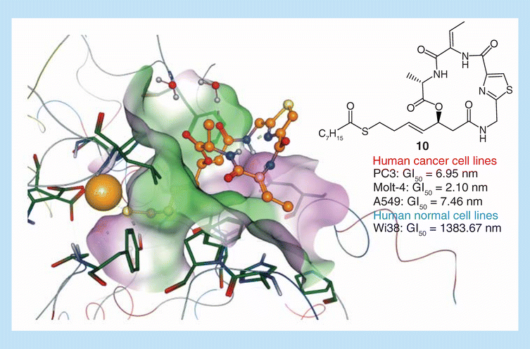
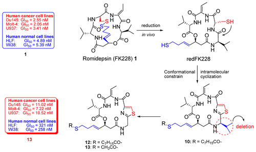
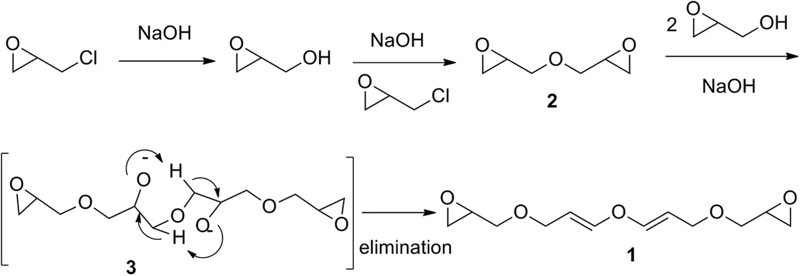
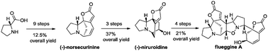
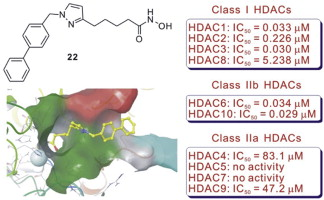
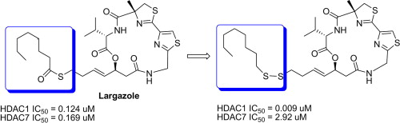
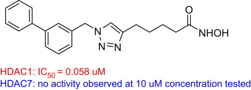
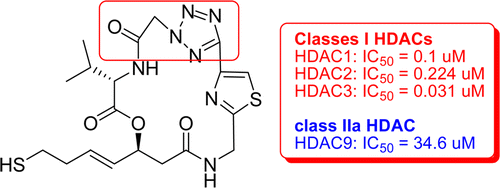
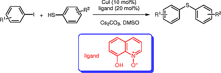
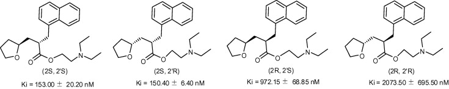

Journal Papers
Zhang, K., Yao, Y., Tu, Z., Liao, C., Wang, Z., Qiu, Y., Chen, D., Hamilton, D. J., Li, Z. & Jiang, S. Discovery of class I histone deacetylase inhibitors based on romidpesin with promising selectivity for cancer cells. Future Medicinal Chemistry 12, 311-323, 2020.
Jin, Y., Yao, Y., Chen, L., Zhu, X., Jin, B., Shen, Y., Li, J., Du, X., Lu, Y., Jiang, S. & Pan, J. Depletion of γ-catenin by histone deacetylase inhibition confers elimination of CML stem cells in combination with imatinib. Theranostics 6, 1947-1962, 2016.

Yao, Y., Tu, Z., Liao, C., Wang, Z., Li, S., Yao, H., Li, Z. & Jiang, S. Discovery of Novel Class I Histone Deacetylase Inhibitors with Promising in Vitro and in Vivo Antitumor Activities. J. Med. Chem. 58, 7672-7680, 2015.
Yao, Y., Li, Z., Qiu, Y., Bai, J., Su, J., Zhang, D. & Jiang, S. Unprecedented reactions: from epichlorohydrin to epoxyglycidyl substituted divinyl ether and its conversion into epoxyglycidyl propargyl ether. Sci. Rep. 5, 14231pp., 2015.
Ma, N., Yao, Y., Zhao, B.-X., Wang, Y., Ye, W.-C. & Jiang, S. Total synthesis of securinega alkaloids (-)-norsecurinine, (-)-niruroidine and (-)-flueggine A. Chem. Commun. (Cambridge, U. K.) 50, 9284-9287, 2014.
Yao, Y., Liao, C., Li, Z., Wang, Z., Sun, Q., Liu, C., Yang, Y., Tu, Z. & Jiang, S. Design, synthesis, and biological evaluation of 1, 3-disubstituted-pyrazole derivatives as new class I and IIb histone deacetylase inhibitors. Eur. J. Med. Chem. 86, 639-652, 2014.
Su, J., Qiu, Y., Ma, K., Yao, Y., Wang, Z., Li, X., Zhang, D., Tu, Z. & Jiang, S. Design, synthesis, and biological evaluation of largazole derivatives: alteration of the zinc-binding domain. Tetrahedron 70, 7763-7769, 2014.
Zhu, X., Chen, L., Jiang, S., Chen, C., Yao, Y., Chen, D., Xue, H. & Pan, J. PQJS380: a novel lead compound to induce apoptosis in acute lymphoblastic leukemia cells. Cancer Biol. Ther. 15, 119-127, 2014.
Sun, Q., Yao, Y., Liu, C., Li, H., Yao, H., Xue, X., Liu, J., Tu, Z. & Jiang, S. Design, synthesis, and biological evaluation of novel histone deacetylase 1 inhibitors through click chemistry. Bioorg. Med. Chem. Lett. 23, 3295-3299, 2013.
Li, X., Tu, Z., Li, H., Liu, C., Li, Z., Sun, Q., Yao, Y., Liu, J. & Jiang, S. Biological evaluation of new largazole analogues: Alteration of macrocyclic scaffold with Click chemistry. ACS Med. Chem. Lett. 4, 132-136, 2013.
Su, K., Qiu, Y., Yao, Y., Zhang, D. & Jiang, S. 8-hydroxyquinoline-N-oxide-promoted copper-catalyzed C-S cross-coupling of thiols with aryl iodides. Synlett 23, 2853-2857, 2012.
Hao, J., Chen, B., Yao, Y., Hossain, M., Nagatomo, T., Yao, H., Kong, L. & Sun, H. Practical access to four stereoisomers of naftidrofuryl and their binding affinity towards 5-hydroxytryptamine 2A receptor. Bioorg. Med. Chem. Lett. 22, 3441-3444, 2012.

Patents
Cierpicki, T., Grembecka, J., Ying, W., Yao, Y., Gray, F. & Zhao, Q. Preparation of pyrrole derivatives as PRC1 inhibitors and methods of treatment therewith. WO2019236957A1 2019.
Jiang, S., Tu, Z., Hao, H., Yao, Y., Qiu, Y., Yao, H., Qiang, L. & Chen, D. Preparation of Benazepine aromatic ring compounds as antitumor agents. CN107674059A 2018.
Jiang, S., Tu, Z., Hao, H., Yao, H., Qiu, Y., Yao, Y. & Chen, D. Preparation of heterocyclic urea compounds as anticancer agents. WO2018133716A1 2018.
Jiang, S., Tu, Z., Zhu, J., Yao, H., Yao, Y., Qin, X., Gu, S. & Qiu, Y. Preparation of 2-amino-4-phenyl-6-(alkylamino)pyrimidine derivatives useful as anticancer agents. CN106928192A 2017.
Jiang, S., Tu, Z., Hao, H., Yao, H., Qiu, Y., Yao, Y. & Chen, D. Preparation of heterocyclic urea compounds as anticancer agents. CN106866571A 2017.
Jiang, S., Tu, Z., Zheng, D., Qin, D., Bai, J., Qin, X., Yao, Y., Liu, Y., Qiu, Y. & Chen, J. Preparation of 3-(pyridin-3-yl)acrylamide derivatives as nicotinamide phosphoribosyltransferase inhibitors useful for the treatment of cancer. WO2016095581A1 2016.
Jiang, S., Yao, Z., Yao, Y., Qiu, Y., Lu, C., Su, K. & Yao, X. Cyclic peptide compound, and preparation method, pharmaceutical composition and use thereof. WO2015027959A1 2015.
Jiang, C., Tu, Z., Zheng, D., Qin, D., Bai, J., Qin, X., Yao, Y., Liu, Y., Qiu, Y. & Chen, J. Preparation of 3-(pyridin-3-yl)acrylamide derivatives as nicotinamide phosphoribosyltransferase inhibitors useful for the treatment of cancer. CN104557863A 2015.
Jiang, S., Yao, Z., Yao, Y., Qiu, Y., Lu, C., Su, K. & Yao, X. Cyclopeptide compound, and preparation method, pharmaceutical combination and application thereof. CN103524598A 2014.
Jiang, S., Tu, Z., Li, X., Yao, Y. & Qiu, Y. Preparation of largazole analog compounds as antitumor agents. CN103601742A 2014.
Jiang, S., Tu, Z., Sun, Q., Liu, C., Yao, Y. & Qiu, Y. Preparation of N-containing heterocyclic derivatives as histone deacetylase I inhibitor. CN103086971A 2013.
Jiang, S., Li, S., Yao, Z., Yao, Y., Zhang, F., Chao, Y., Ye, H. & Chen, M. Preparation of cyclopeptides as histone deacetylase inhibitors. WO2013071715A1 2013.
Jiang, S., Tu, Z., Yao, Y., Liu, C., Yao, H. & Xue, X. Preparation of triazole compounds as histone deacetylase inhibitors. CN102311398A 2012.
Jiang, S., Li, S., Yao, Y., Zhang, F., Chao, Y., Ye, H. & Chen, M. Preparation of cyclopeptides as histone deacetylase inhibitors. CN102391359A 2012.
Jiang, S., Xu, J., Li, S., Yao, H., Zeng, X. & Yao, Y. Process for preparation of FK228. CN102276689A 2011.